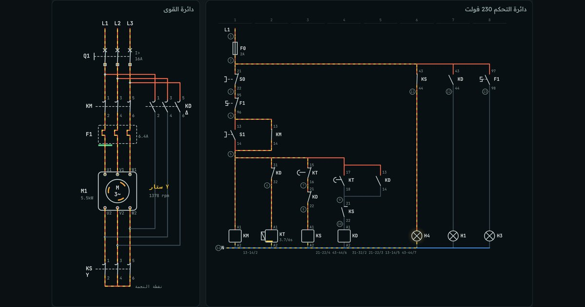

كورس · دوائر التحكم والمحركبالعربي
كورس الكلاسيك كنترول
كل دائرة مرسومة قوى وتحكم جنب بعض، ومعاها شكل اللوحة بالأجهزة على الراك. اضغط تشغيل وشوف التيار ماشي فين، جرّب الأعطال وقيس بالملتيميتر.
أول درسين مفتوحان للتجربة

المحتوى
الدروس
بالترتيب، وفي كل درس شرح بسيط وتجارب بيدك وأسئلة.
- الأزرار والمفاتيح واللمباتمفتوح للجميعالوحدة 1: الأجهزة · NO و NC، ترقيم الأطراف، الزر المزدوج، مفتاح الاختيار، زر الطوارئ، ألوان اللمبات
- الكونتاكتورمفتوح للجميعالوحدة 1: الأجهزة · من جوه: الملف والقلب والسوستة، كونتاكتات القوى والمساعدة، جهد الجذب والفصل، الأعطال، اختيار المقاس
- الحماية: الفيوز وقاطع الموتور والأوفرلودالوحدة 1: الأجهزة · الأوفرلود الحراري ومنحنى الفصل وضبطه، الريست اليدوي والأوتو، القصر وقاطع الموتور والفيوز
- الموتور ثلاثي الفاز: ستار ودلتا والاتجاهالوحدة 1: الأجهزة · قراءة اليافطة، كباري علبة الأطراف ستار ودلتا، عكس الاتجاه، حرق الموتور من التوصيل الغلط
- تشغيل وإيقاف مباشر بكونتاكت تثبيتالوحدة 2: الدوائر الأساسية · أول دائرة: التثبيت، الأوفرلود، لمبات الإشارة، انقطاع الكهرباء
- التشغيل والإيقاف من مكانينالوحدة 2: الدوائر الأساسية · أزرار التشغيل على التوازي والإيقاف على التوالي
- تشغيل لحظي (Jog) وتشغيل مستمرالوحدة 2: الدوائر الأساسية · الزر المزدوج وليه لازم يفصل قبل ما يوصل
- عكس الحركة بإنترلوكالوحدة 2: الدوائر الأساسية · كونتاكتورين وإنترلوك كهربي، وإيه اللي يحصل لو الإنترلوك اتشال
- عكس الحركة المباشر بأزرار مزدوجةالوحدة 2: الدوائر الأساسية · العكس من غير إيقاف، وتيار الفرملة العكسية
- تشغيل متتابع لموتورينالوحدة 2: الدوائر الأساسية · كونتاكت السماح: الموتور الثاني ما يشتغلش قبل الأول
- التايمر: تأخير التشغيل وتأخير الفصلالوحدة 3: التايمر ودوائره · TON و TOF، الأطراف 15-16 و 15-18، مخطط الزمن، أنواع التايمرات
- تشغيل متتابع أوتوماتيك بالتايمرالوحدة 3: التايمر ودوائره · زر واحد، والتايمر يشغل الموتور الثاني بعد زمن
- ستار/دلتا أوتوماتيك بالتايمرالوحدة 3: التايمر ودوائره · KM و KS و KD، الإنترلوك، ضبط الأوفرلود والتايمر
- خط سيور بثلاث مواتير وزر طوارئالوحدة 3: التايمر ودوائره · ترتيب التشغيل بتايمرين، الأوفرلودات على التوالي، الطوارئ وعدم الرجوع لوحده
- الليمت سويتش والعوامةالوحدة 4: الليمت سويتش والعوامة · إزاي بيشتغلوا، ليه الإيقاف بالمقفول، فرق القلبة في العوامة، ملء ولا تفريغ
- ذهاب وعودة أوتوماتيك بليمت سويتشالوحدة 4: الليمت سويتش والعوامة · عربة رايحة جاية لوحدها بليمتين، وإيه اللي يحصل لو الليمت اتكسر
- طلمبة بالعوامة يدوي/أوتو وحماية من الناشفالوحدة 4: الليمت سويتش والعوامة · مفتاح اختيار يدوي/أوتو، عوامة الخزان، وعوامة البير ضد التشغيل على الناشف
- تشغيل لفترة محددة بالتايمرالوحدة 5: تايمرات وستار/دلتا ودوائر أكتر · الموتور يشتغل زمن معين ويقف لوحده
- مروحة تبريد بتأخير فصلالوحدة 5: تايمرات وستار/دلتا ودوائر أكتر · تايمر تأخير الفصل يخلي المروحة تكمل بعد وقوف الموتور
- لمبة إنذار بتفلش بتايمرينالوحدة 5: تايمرات وستار/دلتا ودوائر أكتر · تايمرين بيشغلوا بعض فاللمبة تنور وتطفي
- ستار/دلتا مع عكس الحركةالوحدة 5: تايمرات وستار/دلتا ودوائر أكتر · كونتاكتورين للاتجاه مع KS و KD والتايمر
- موتور بسرعتين (دالاندر)الوحدة 5: تايمرات وستار/دلتا ودوائر أكتر · بطيء دلتا وسريع نجمة مزدوجة YY بثلاث كونتاكتورات
- فرملة الموتور بالعكس ومفتاح السرعةالوحدة 5: تايمرات وستار/دلتا ودوائر أكتر · وقوف سريع بعكس فازتين، ومفتاح سرعة يمنع اللف العكسي
الكورس بالأرقام
23درس من الأزرار والكونتاكتور حتى الدالاندر والفرملة بالعكس
5وحدات: الأجهزة، الدوائر الأساسية، التايمر، الليمت سويتش والعوامة، ودوائر متقدمة
2شكلين لكل دائرة: المخطط وشكل اللوحة على الراك
IECمخططات بترقيم الأطراف والأعمدة زي اللوحة الحقيقية
الكلاسيك كنترول
ماذا ستتعلّم
- تعرف الأزرار والكونتاكتور والأوفرلود والموتور من جوه وإزاي تقرا أرقامهم
- تفهم التثبيت والإنترلوك وعكس الحركة والتشغيل المتتابع
- تفهم التايمر بنوعيه وتشغّل ستار/دلتا أوتوماتيك وتضبط الأوفرلود صح
- تدوّر على العطل في دائرة حقيقية بالملتيميتر بين نقط القياس
- تشوف نفس الدائرة مخطط وشكل لوحة بالأجهزة على الراك
لمن
لمن هذا الكورس
- للفنيين والكهربائيين الذين يريدون فهم اللوحة لا تقليدها فقط
- لطلبة الدبلومات والمعاهد وهندسة الكهرباء
- إذا كنت ستدخل مقابلة عمل في مصنع أو صيانة
- قبل أن تبدأ في الانفرترات والـ PLC
أسئلة متكررة
قبل أن تسأل
هل أحتاج خلفية قبل الكورس؟
يُفضَّل أن تعرف الجهد والتيار والتوالي والتوازي. إن لم تكن كذلك، فابدأ بكورس أساسيات الكهرباء ثم عُد إلى هنا.
إزاي بتشتغل الدوائر؟
كل دائرة مرسومة جاهزة. بتضغط الأزرار، والدائرة بتشتغل قدامك: الكونتاكتورات تجذب، الموتور يلف، والأوفرلود يسخن ويفصل. وفيه وضع تتبع عطل: الكورس يخبي عطل وإنت تدوّر عليه بالملتيميتر.
هل الكورس مجاني؟
أول درسين مفتوحان لكل من لديه حساب. وتُفتح بقية الدروس عند شراء الكورس.
هل يعمل على الموبايل؟
نعم. المخطط وشكل اللوحة بيتحركوا بالعرض على الشاشة الصغيرة، والأزرار في العمود الجانبي. الأريح تابلت أو كمبيوتر.
هل أنت جاهز لتبدأ الكلاسيك كنترول؟
أول درسين مفتوحان للتجربة. ادخل الآن وتابع على راحتك، ويُحفظ تقدّمك.